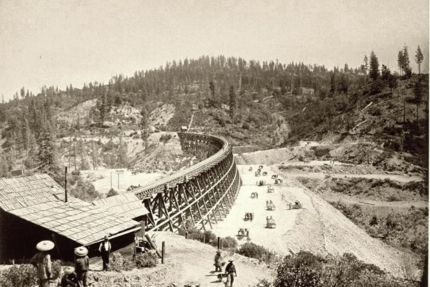

Salt Lake & Mercur Railroad Connected
In 1894, the Salt Lake and Mercur Railroad connected into the Salt Lake and Western system, further expanding the rail network centered at Lehi Junction. This connection linked additional mining districts, particularly those in the Mercur area, to the existing line running through Lehi. As a result, the volume of ore, supplies, and rail traffic moving through the Junction increased significantly.[63]
The integration of these rail lines reinforced Lehi Junction's role as a key transfer point within a broader regional mining and transportation network.

How Many Goods Passed Through Lehi Station?
The convergence of these lines transformed Lehi Junction into a staggering industrial funnel, moving a volume of freight that would dwarf the logistical needs of a modern city. By the turn of the century, the Junction was processing hundreds of thousands of tons of material annually. To visualize the scale, consider the Mercur ore alone: at its peak, the mines were shipping out nearly 1,000 tons of ore per day. In modern terms, that is the equivalent weight of 150 African elephants passing through the Junction every single morning, year-round.[64]
This massive export was met by an equally immense import of supplies. The Lehi Sugar Factory required upwards of 30,000 tons of coal and 40,000 tons of beets during a single "campaign" season. The wealth represented by these shipments was astronomical for the era; the value of the refined sugar and precious metals moving across these tracks in a single year exceeded $3 million in 1900 dollars. Adjusted for inflation, that is the equivalent of shipping $100 million in cargo through this small Utah crossroads annually.[65]
For the station agents at the Junction, the atmosphere was one of controlled chaos. It was a place where the scent of raw beet pulp mingled with the heavy sulfur of smelting ore, creating a sensory overload that signaled Lehi's emergence as a titan of the Intermountain West's regional economy.[66]